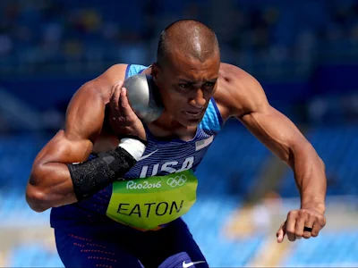
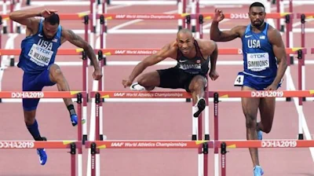

What is the Decathlon
The decathlon is a two-day track-and-field competition made up of ten events that test speed, strength, endurance, and skill across sprints, jumps, throws, and a middle-distance run. Combining these diverse challenges into a single contest, the decathlon is widely regarded as the ultimate measure of all-around athletic ability. Since its debut at the 1912 Stockholm Olympics, where Jim Thorpe claimed the first gold, the Olympic decathlon champion has traditionally been honored with the unofficial but prestigious title of “World’s Greatest Athlete.”
History
The modern decathlon was introduced at the 1912 Stockholm Olympics, inspired by ancient Greek multi-event contests that tested a wide range of athletic skills. That year, American Jim Thorpe dominated the inaugural competition, setting a high standard and earning lasting fame. Over the decades, the event has evolved in scoring methods and training techniques but has consistently served as the benchmark for all-around athletic excellence, with champions from Bruce Jenner in 1976 to Ashton Eaton in the 2010.

